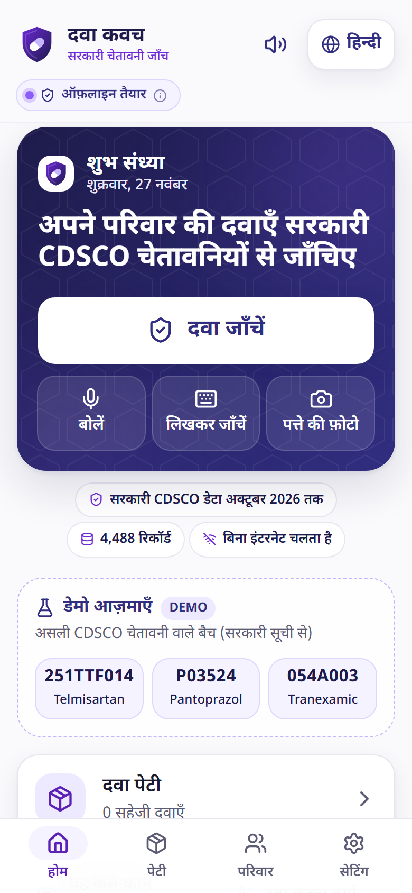
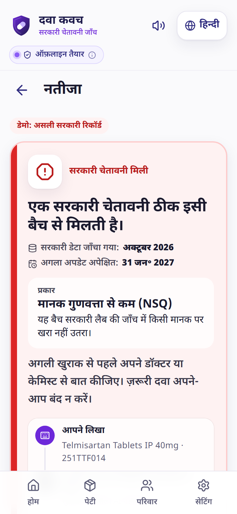

We remember the children who died after taking Coldrif cough syrup. Our deepest sympathy goes to their families.
Batch alerts from CDSCO come out in English, as PDFs and tables, about a month late. The people most at risk are the least likely to see them.


Reachable audience figures, not current users.
Save their medicines in the cabinet.
Saved medicines are re-checked every day against the official list.
CDSCO records on the phone; matching is offline plain code.
WhatsApp message, or web push if they accepted the invite link.
| Dependency | If it gets costly or stops working | Fallback already built |
|---|---|---|
| CDSCO data | Lists arrive about a month late; not every state reports every month. | Full list on the phone (4,488 records, about 0.5 MB). Offline match. GREY says alerts can be delayed. |
| Gemini Flash / Nano | Cloud photo reading needs internet; Nano runs only on supported desktop Chrome. | The offline check uses no AI model. The user types the batch. |
| Sarvam AI | Build time only: Hindi and English voice clips, and the Punjabi translation cache. The app never calls it. | Clips are static files. A missing clip falls back to a device voice, then to text. |
| Gemini TTS | Build time only: Punjabi and Kannada voice clips; free-tier quota limits. | Missing clips fall back to the browser voice, then to text. |
| Translations | Most regional translations were AI-assisted, then back-translated and code-checked. | A string that drifts is shown in English. Native-speaker review is still recommended. |
| Firebase | Push and cloud AI stop if the service or its key is unavailable. | Core check unaffected. WhatsApp alert; calendar (.ics) reminder. |
| Browser speech | Chrome and Android only; offline Hindi needs the Hindi speech pack. | Type the batch or use a photo. Mic hidden where unsupported. |
successful real-user voice checks
Hindi, English and Punjabi. One participant aged 60+. No manual typing. No developer assistance.
Run it in one command: docker compose up, then open http://localhost:3000. No API keys are needed for the core check.
Repository: github.com/micneeraj/dawashield-voice
Built by Neeraj Kumar.
All build prompts were dictated with Wispr Flow.